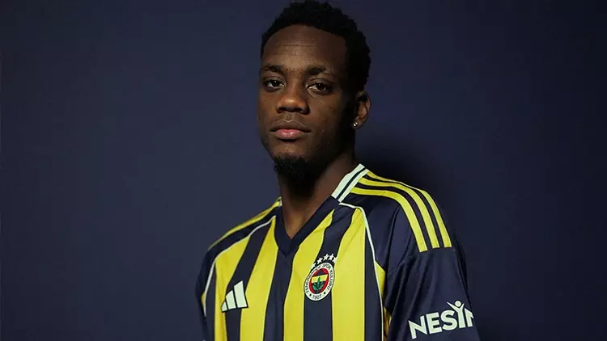
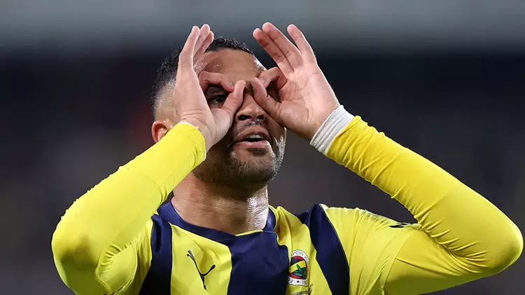

FenerBahçe Oyuncu Listesi

Jhon Duran
OYUNCU BİLGİLERİ
| Anavatandaki isim: |
Jhon Jader Durán Palacio |
| Doğum tarihi/Yaş: |
13 Ara 2003 (21) |
| Doğum yeri: |
Medellín 🇨🇴 |
| Boy: |
1,85 m |
| Uyruk: |
🇨🇴 Kolombiya |
| Mevki: |
Forvet - Santrafor |
| Ayak: |
Sol ayak |
| Temsilci: |
JHSEVENSPORTSCOMPANY... |
| Güncel kulüp: |
Fenerbahçe SK |
| Sözleşme tarihi: |
6 Tem 2025 |
| Sözleşme sonu: |
30 Haz 2026 |
| Kiralandığı kulüp: |
Al-Nassr FC |

Youssef En-Nesyri
OYUNCU BİLGİLERİ
| Anavatandaki isim: |
يوسف النصيري |
| Doğum tarihi/Yaş: |
1 Haz 1997 (28) |
| Doğum yeri: |
Fès Fas |
| Boy: |
1,88 m |
| Uyruk: |
Fas |
| Mevki: |
Forvet - Santrafor |
| Ayak: |
Sol ayak |
| Temsilci: |
11MANGMT |
| Güncel kulüp: |
Fenerbahçe SK |
| Sözleşme tarihi: |
24 Tem 2024 |
| Sözleşme sonu: |
30 Haz 2029 |